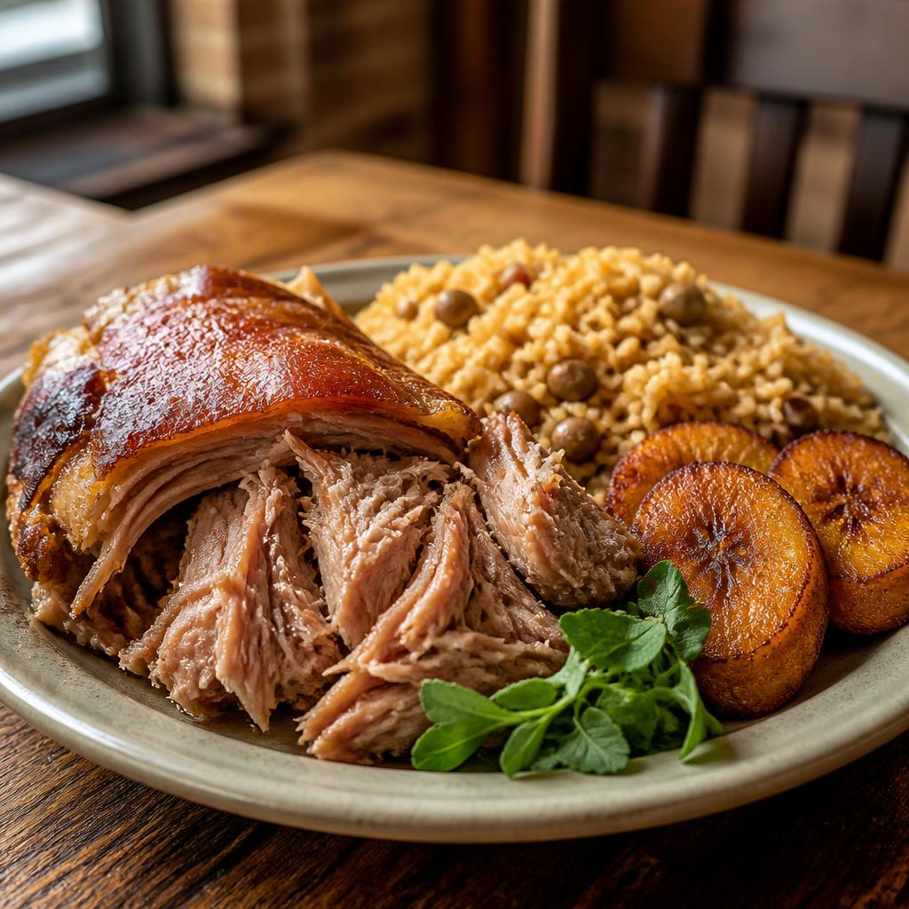

A little city guide
Meet
Hartford.
Connecticut’s capital has a big-story past, a lively food scene, and plenty of local character packed beside the river.
Get to know the city
41° 45′ N72° 41′ W A city with a lot to share EST.
1635
The short version
Hartford at a glance
-
01
Known as
Insurance Capital
of the World - 02 Population 121,981 2025 Census estimate
- 03 Connecticut became a state 1788
Population: U.S. Census Bureau Statehood: CT.gov Nickname: University of Connecticut
On the table
Puerto Rican
comfort food
Hartford’s Puerto Rican food scene is a point of local pride. Pernil — pork roasted until tender with crisp, golden skin — is a beloved dish to look for, often served with arroz con gandules and sweet plantains.
Slow-roasted, shared, and full of flavor.
Leading the state
Ned Lamont
Governor of Connecticut
A state symbol
Say hello to
the robin.
The American robin has been Connecticut’s official state bird since 1943. Give the picture a tap to see it take a little hop.
State bird detailsMake it yours
Things I like
about Hartford
Add a favorite place, memory, or little detail to your list.
Your list is ready for its first favorite.